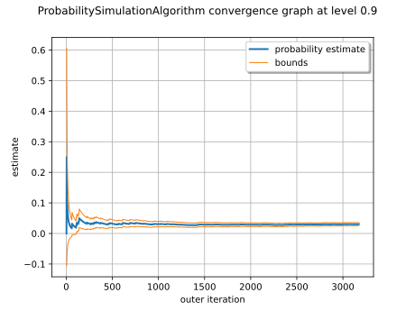

Note
Go to the end to download the full example code.
Exploitation of simulation algorithm results¶
In this example we are going to retrieve all the results proposed by probability simulation algorithms:
the probability estimate
the estimator variance
the confidence interval
the convergence graph of the estimator
the stored input and output numerical samples
importance factors
import openturns as ot
import openturns.viewer as otv
Create the joint distribution of the parameters.
distribution_R = ot.LogNormalMuSigma(300.0, 30.0, 0.0).getDistribution()
distribution_F = ot.Normal(75e3, 5e3)
marginals = [distribution_R, distribution_F]
distribution = ot.JointDistribution(marginals)
Create the model.
model = ot.SymbolicFunction(["R", "F"], ["R-F/(pi_*100.0)"])
modelCallNumberBefore = model.getEvaluationCallsNumber()
modelGradientCallNumberBefore = model.getGradientCallsNumber()
modelHessianCallNumberBefore = model.getHessianCallsNumber()
To have access to the input and output samples after the simulation, activate the History mechanism.
Remove all the values stored in the history mechanism. Care : it is done regardless the status of the History mechanism.
Create the event whose probability we want to estimate.
vect = ot.RandomVector(distribution)
G = ot.CompositeRandomVector(model, vect)
event = ot.ThresholdEvent(G, ot.Less(), 0.0)
Create a Monte Carlo algorithm.
Define the HistoryStrategy to store the values of ![P_n]() and
and ![\sigma_n]() used ot draw the convergence graph.
Compact strategy : N points
used ot draw the convergence graph.
Compact strategy : N points
N = 1000
algo.setConvergenceStrategy(ot.Compact(N))
algo.run()
Retrieve result structure.
result = algo.getResult()
Display the simulation event probability.
0.030580075662042867
Criteria 3 : Display the Standard Deviation of the estimator
0.003057093060511293
Display the variance of the simulation probability estimator.
9.345817980626304e-06
Criteria 2 : Display the number of iterations of the simulation
3172
Display the total number of evaluations of the model
3172
Save the number of calls to the model, its gradient and hessian done so far.
modelCallNumberAfter = model.getEvaluationCallsNumber()
modelGradientCallNumberAfter = model.getGradientCallsNumber()
modelHessianCallNumberAfter = model.getHessianCallsNumber()
Display the number of iterations executed and the number of evaluations of the model.
modelCallNumberAfter - modelCallNumberBefore
3172
Get the mean point in event domain care : only for Monte Carlo and LHS sampling methods.
Get the associated importance factors care : only for Monte Carlo and LHS sampling methods.

Display the confidence interval length centered around the MonteCarlo probability. The confidence interval is
![IC = [\tilde{p} - 0.5 \ell, \tilde{p} + 0.5 \ell]]()
with level 0.95, where ![\tilde{p}]() is the estimated probability and
is the estimated probability and ![\ell]() is the confidence interval length.
is the confidence interval length.
ci95 = result.getProbabilityDistribution().computeBilateralConfidenceInterval(0.95)
print("Confidence interval (0.95) = ", ci95)
Confidence interval (0.95) = [0.0245883, 0.0365719]
Draw the convergence graph and the confidence interval of level alpha. By default, alpha = 0.95.
alpha = 0.90
graph = algo.drawProbabilityConvergence(alpha)
view = otv.View(graph)

Get the numerical samples of the input and output random vectors stored according to the History Strategy specified and used to evaluate the probability estimator and its variance.
Get the values of the estimator and its variance stored according to the History Strategy specified and used to draw the convergence graph.
estimator_probability_sample = algo.getConvergenceStrategy().getSample()[0]
estimator_variance_sample = algo.getConvergenceStrategy().getSample()[1]
print(estimator_probability_sample, estimator_variance_sample)
[0,-1,2] [0.25,0.046875,4]